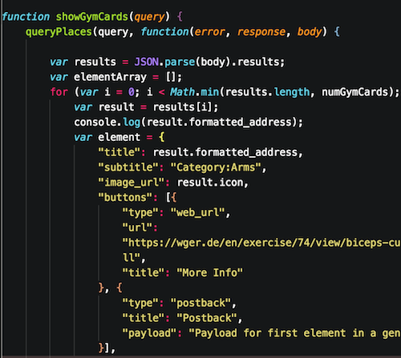

I am a student at the University of Waterloo. I intend to learn Computer Science and Applied Math with an option in Engineering(specifically Communication and Control).

Currently, I am seeking a Co-Op position in Software Development, Web Development, Engineering or Analytics. I have a wide ranging skill set as I am taking courses in Math, Computer Science and Electrical and Computer Engineering. I look to further myself this Spring by living in the Velocity Residence. I will have the opportunity to work with students on their startups as a developer. During the process, I hope to gain some knowledge in business and design as well.
I will surely be an asset to your startup/company. For more information, please see my resume.
Or contact me:
mvjoshi@uwaterloo.ca
Cell: (416)-986-8402
I would love to chat!